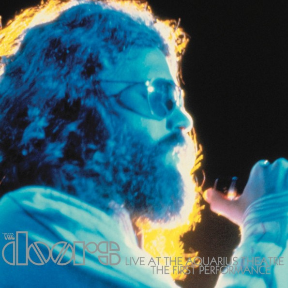

| |

|
|
The Doors: Live at the Aquarius Theatre:
The First Performance
Bright Midnight Archives / Rhino reissue on LP (May 2016)
Another very fine contribution to 'Record Store Day', the annual
worldwide
celebration of independent music shops primarily and of
vinyl, artists and
music in general. Reissued 15 years after its initial
release as a sublime
double CD set in 2001, the Doors Music Company's own
Bright Midnight
Archives label reintroduce the concert as a triple LP
set; distributed as
always by Rhino Records.
When in 1969 the Doors and Elektra Records decided to
record 'in concert'
performances to put out as a future live album, the
Aquarius Theatre in Los
Angeles was chosen as the hosting venue for that. After
having recorded two
sets as well as a private rehearsal session, the record
company wasn't fully
satisfied and the band would go on to have a further
number of concerts
taped by and for Elektra in 1970. The material considered
best suitable was
then hand picked by producer Paul Rothchild, and
eventually released as
the much praised 'Absolutely Live' double album in July
of 1970.
Being pieced together from numerous sources, 'Absolutely
Live' does provide
the perception of being one concert and it's hats off to
Rothchild and engineer
Bruce Botnick for that. Botnick's work with the Doors
started as early as
their debut album, and I'm convinced that he will go on
refining and enriching
the Doors legacy in many years to come after this
beautiful 2016 product
which, as is the case with all official Doors releases,
is the result of his
masterful skills.
Acknowledging Paul A. Rothchild who also stood by the
forming cradle of the
Doors as a worldwide and lasting success, I'd like to
state that he sadly
passed away as early as 1995.
Although deemed not good enough for a live album back in
1969, a
substantial number of cuts from the two Aquarius Theatre
shows found their
way onto 'Absolutely Live'. From this particular set,
'The Celebration of the
Lizard', the epic piece aborted from the third album,
'Waiting for the Sun'
that after several failed attempts at a studio take the
previous year, got its
debut on record. Sublimely merely edited by Paul and
Bruce, this rendition
is almost identical on both 'Absolutely Live' and the
album I am reviewing
today - it's easy and good fun spotting the differences.
Extensive liner notes by both Bruce Botnick and the band
members unveil a
nice bit of history as well as the technical side of the
production; Bruce going
into detail about how the album came to be. Apparently,
due to technical
difficulties, the entire show had to be remixed from the
analogue master
tapes, making for a different listening experience
compared to the CD
version - interesting, yet not very obvious to mark the
changes.
So what about the actual music on this triple album,
limited to 8.500 copies
worldwide, on beautiful clear 180g vinyl? It's July 1969,
and the Doors are
trying to regain solid ground to support them as a
performing act after the
disastrous incident that was the Miami concert the
previous March. Is the
rather uncertain and cautious Jim Morrison at the start
of the concert a
result of that, or is his almost shy introduction the
product of being slightly
intimidated by the thought of tonight's deliverance being
registered for
posterity? Neither him, nor the audience seem to hold
what it takes to pull
the band into gear, not during a dry, uninspired 'Back
Door Man' anyway.
The following 'Break on Through' does get things going -
the so important
flow of energy going in circles between the band and its
audience starts
happening. Four songs into the set, after the rather
shaky 'Soul Kitchen',
comes a potentially difficult moment where new material
is being
introduced, a couple of songs the spectators are not yet
(very) familiar
with; 'You Make Me Real' wouldn't surface as a single
until March the
following year, and the delicate bluesy ballad 'I Will
Never Be Untrue'
would forever remain a rare, performed in concert only,
underrated
precious little gem. But the audience is loving it,
devotedly they embrace
both old and new, the following landmark that is
"When the Music's Over"
receives a ravenous reception.
But the Doors are recording tonight, and this leads them
to not quite play
much of their known, previously recorded output, but
rather to put forward
newer work as well as a further dip into the blues,
beyond 'Back Door Man',
with cover versions of 'Mystery Train', 'Crossroads', and
'Who Do You Love'.
It's all great, and everybody's loving it!
By this time well relaxed and well oiled, Morrison leads
the band into
newcomers 'Universal Mind' and 'Build Me a Woman' - both
fresh Doors
originals, though the latter being in an early stage of
development still; it's
not quite flying yet, the song hovers around a bit,
uncomfortably, without
finding the means to make its statement. Ultimately,
after repeated
requests from a very patient audience -the recording
process is pretty
demanding: long pauses, quiet moments do bring down the
moods a bit-
the Doors finally launch their biggest cannon to date and
fire an outstanding
'Light my Fire' into the Aquarius Theatre. The Doors,
that is, as a band, not
so much Morrison who appears rather bored with the song;
he plugs an
air of "do we really need to do this" and sings
in an anything but
impassioned fashion. Making up for that, Jim reconnects
with the right
spirits for the final part of the show: the
aforementioned 'The Celebration
of the Lizard', surely pinning each and every member of
the audience to
their seat! This is the Doors not much loved by the
teenyboppers but this
is what Jim Morrison is all about: poetry... and
Manzarek, Krieger and
Densmore are his outstanding vehicle, backing up his
every word,
delivering a driving, thrilling performance.
Fantastic! And this was but the first of two sets at the
Aquarius Theatre
today, on July 21st 1969. A different audience would
later fill the seats, a
warmed up band would reemerge to once again deliver a
high quality live
show.
Casting 2 CD's worth into the vinyl format apparently
left Bruce Botnick
with a 6th side to fill. He's done so with what he claims
to be "something
new" in the form of pre-concert soundchecking. Yes
and no... Clearly a
pieced together 14 minutes of indeed sounds that would
have appeared
minutes before showtime, yet the included rendition of
'Maggie M'Gill'
was taped at the private rehearsal session the band held
at the Aquarius
Theatre, the day following the concerts. A session
without an audience,
set up and taped specifically for the planned live album.
Both the second
show and the rehearsal session would also be released by
Bright Midnight
Archives in respectively 2001 and 2002.
We do not mind, Bruce! Not at all! "Filler
material" comes in different
shapes and sizes, as well as in varying grades of
quality, and this here
"filler" is top shelf stuff! So don't you be
worried, we thank you for this
outstanding quality product, we applaud you once again:
thank you Bruce Botnick!
� Kevin Chiotis for the Doors Quarterly Magazine Online - May 2016
|
|